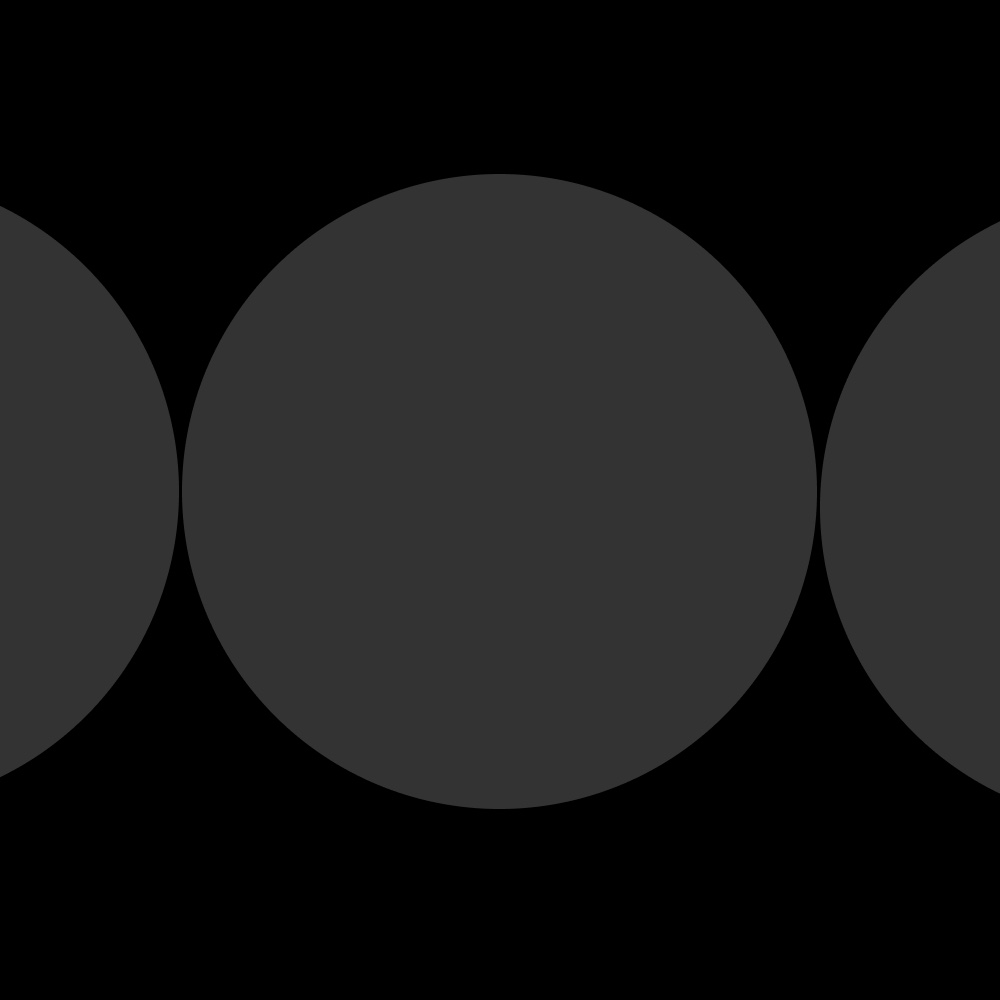

How I work
Solving complex problems
Complex challenges need a clear starting point. Structure helps make sense of ambiguity and gives the team a direction to follow.
Connecting product and business strategy
User needs and business priorities guide product decisions, with effort focused where it can make the biggest difference.
Raising visual quality through systems
Visual quality lives in the details. Shared patterns, design systems and clear standards bring consistency across the product.
Driving impact through evidence
Research, behavioural insights and data inform decisions, help evaluate outcomes and reveal where the experience needs to improve.
Growing and aligning teams
Trust, feedback and ownership help designers grow in craft, confidence and autonomy. Alignment with Product, Engineering and the business gives that work shared purpose.
Designing with AI
AI supports problem analysis, prototyping with our design system and research automation. Human judgement guides every output.
Case studies
My three latest projects, from rethinking how people pay to designing a digital wallet from scratch. A look at the decisions we made, what we learned from our users, and one of my favourite parts of the work: building the teams behind it.
Checkout
Simplifying payments across Latin America
Shaping a consistent payment experience across countries, payment methods, and partner integrations.
Read the case


Merchant Portal
Making complex financial operations easier to navigate
Guiding the design of a portal that helps merchants manage payments, balances, and daily operations.
Read the case


Digital Wallet
Designing a wallet. Building a team.
From designing the first screens to hiring and leading the design team.
Read the case
Building design teams
Wherever I've worked, I've built the design team. How I hire, grow people and earn design its place.
Hands-on
My role has grown to include design strategy and team leadership, but I still love sitting down to design and getting the little details right so things feel clearer and easier to use. Here are a few of the projects I’ve most enjoyed designing.


About
I’ve spent more than 20 years designing digital products around the people who use them. I fell for design while studying journalism. Laying out the pages was the part I always looked forward to, and it led me to study graphic design and specialise in UX/UI.
I started out designing corporate websites and entertainment portals, then co-founded a design studio I ran for ten years. I went on to build a design department from scratch at a software company. Today, I lead the product design team I built at a fintech company.
I still love getting into the details of a flow and figuring out why someone gets stuck. And one of the things I love most about leading a team is seeing a designer grow more confident in their own judgement and take a piece of work further than I’d imagined.
- Based in
- Barcelona
- Recognition
- Anuaria Awards 2022 · Scarface 1920, selection
- CLAP International Design Awards 2021 · Seeway, catalogue design
- CLAP International Design Awards 2021 · Redzen Games, board game